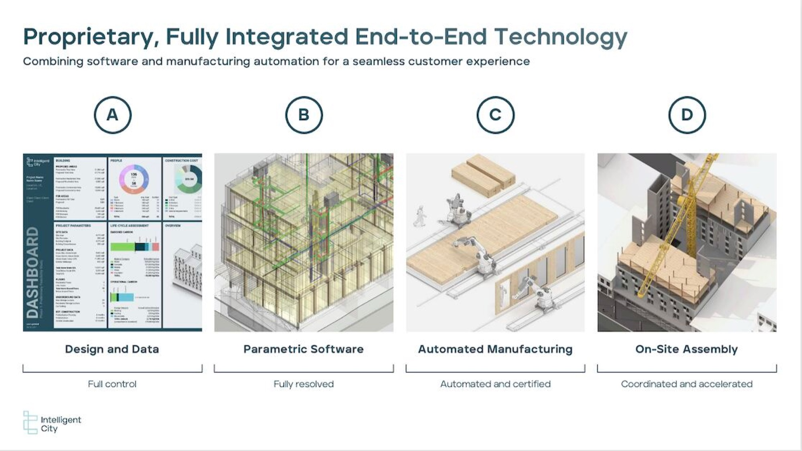

05Intelligent City · 2021–22 · Computational design
Mass-timber buildings, generated
Intelligent City designs and manufactures mass-timber housing. In 2021–22, its parametric building generator was expanded to produce far more building forms, all compatible with its manufacturing system, and every design was measured for materials, cost and emissions.

01Context
At the time, the range of buildings the generator could produce limited what the company could evaluate and optimize, and pulling data out of each design, like material quantities, was manual.
02Approach
- A bigger generator. New methods for generating buildings automatically, all compatible with the company’s mass-timber manufacturing system, which sped up the path from design to production.
- Automatic data extraction from every design, down to material quantities, joined with outside data sources so building performance could be checked with numbers.
- A client-facing dashboard, designed and built solo, that turned each design into cost and emissions estimates.


03Outcome
200%more building forms the generator could produce
That range became the base for the company’s design evaluation and optimization at the time, and each design came with instant cost and emissions estimates.
Next project
Estimating pedestrian activity

Say hello.
Working on something for the built environment? I’d love to hear about it.
© 2026 Shakira “Tola” OniyangiBack to top ↑